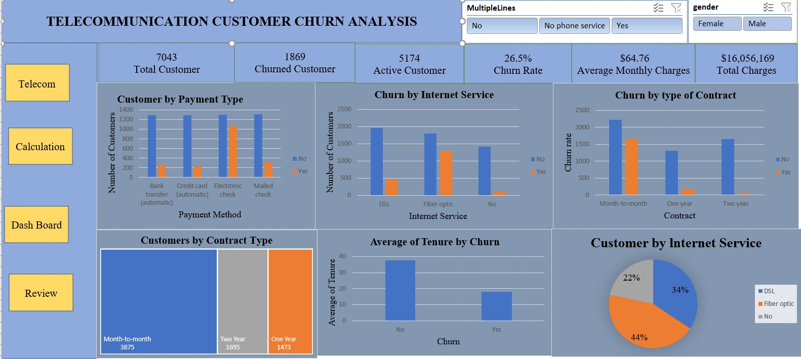
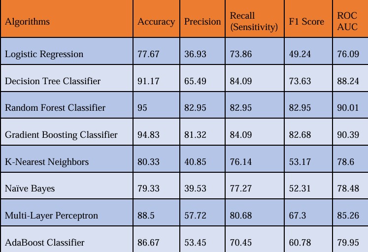
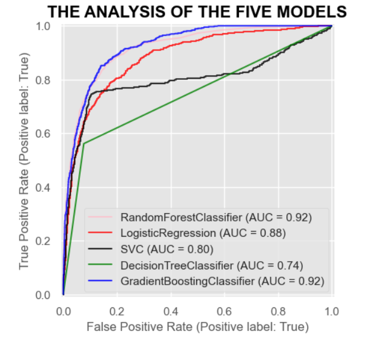

Telecommunication Customer Churn dashboard provide an in depth analysis of customer churn within the telecom industry using Excel's. The dashboard highlights churn patterns based on contract type, payment method, internet service and customer demographics. We've uncovered key insights to help reduce churn rates and improve customer retention strategies.


This study aims to predict mobile churn in the telecommunication industry and propose mitigation strategies using eight supervised machine learning techniques were tested for perfomance. The data was obtained from repository called kaggle, further go into data preprocessing, exploratory data analysis, Synthetic Minority Oversampling Technique (SMOTE) was applied to handle class imbalance, the dataset is split into training and testing sets at a ratio of 82% to 18%, stratified 10-fold cross-validation was included to prevent overfitting, classification of churn, web application was developed using python's streamlit library. The best performing model was the Random Forest Classifier, which acheievd 95% accuracy and performed best in 10-fold cross-validation by achieving an average accuracy of 96.02% with 0.94 standard deviation, having the international plan, customer service calls, and total day charge as the key predicators.

This study uses predictive analytics and machine learning to forecast customer purchase behaviour in e-commerce companies based on website visits. Our analysis focuses on the revenue variables, which indicates purchases activity, using a dataset that includes 12,330 customer sessions consisting of 18 Variables having 10 numerical and 8 categorical variables. Among the five classification models were tested, the Random Forest classifier outperformed the others, achieving an accuracy of 89.54% and AUC-ROC of 0.92, compared to the support Vector Machine a low-performance accuracy of 83% and AUC-ROC score of 0.80.
Key findings show that Page Values substantially influence purchase decisions, providing actionable insights for e-commerce companies to optimise product pages, enhance navigation, target strategies for returning visitors, and maximise marketing campaingns.